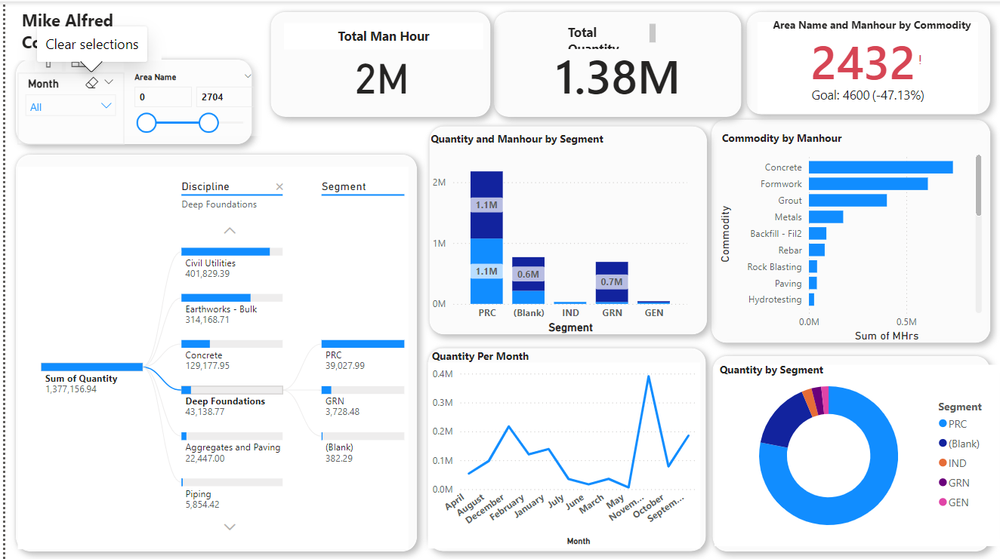

Construction Project Analytics Dashboard
Designed a comprehensive Power BI dashboard for construction project management, enabling real-time tracking of 2M+ man-hours and 1.38M quantities across multiple disciplines, segments, and commodities.

Background & Business Context
In large-scale construction projects, tracking man-hours, material quantities, and progress across disciplines is critical for ensuring timely delivery and cost control. Without a centralized view, project managers rely on fragmented spreadsheets and manual reports, leading to delayed decision-making and budget overruns.
"Effective project controls depend on real-time visibility into resource allocation and quantity tracking across all disciplines and segments."
This project delivers a single-pane-of-glass dashboard that consolidates construction data from multiple sources, enabling stakeholders to monitor KPIs, identify bottlenecks, and optimize resource allocation in real time.
Project Objectives
- Consolidate man-hour and quantity data from multiple disciplines into a unified view
- Track key performance indicators — total man-hours, total quantity, and goal attainment
- Analyze resource distribution across segments (PRC, IND, GRN, GEN)
- Enable drill-down filtering by discipline, month, and area for granular insights
- Monitor commodity-level man-hour allocation for cost optimization
Dashboard Design & Features
KPI Summary Cards
Top-level metrics provide immediate project health visibility — 2M total man-hours, 1.38M total quantity, and a goal tracker showing 2,432 out of 4,600 target (area name and man-hour by commodity), enabling quick assessment of project progress.
Discipline Decomposition Tree
An interactive hierarchical breakdown of the 1,377,156.94 total quantity across disciplines. Deep Foundations is the selected drill-down showing sub-categories: Civil Utilities (401K), Earthworks-Bulk (314K), Concrete (129K), Deep Foundations (43K), Aggregates & Paving (22K), and Piping (5.8K).
Segment Analysis
Stacked bar charts visualize quantity and man-hour distribution by segment (PRC, IND, GRN, GEN), revealing that PRC dominates with 1.1M man-hours, followed by GRN at 0.7M. A donut chart provides proportional segment breakdown for executive reporting.
Commodity Man-Hour Tracking
Horizontal bar chart ranking commodities by man-hour consumption — Concrete leads at ~0.5M hours, followed by Formwork and Grout. This breakdown enables targeted cost optimization and resource reallocation decisions.
Monthly Trend Analysis
Time-series line chart tracking quantity per month, showing seasonal patterns and production ramp-up. Clear upward trend from ~50K in April to peak of ~350K in October/November, indicating accelerating project velocity.
Technical Implementation
- Data Modeling: Star schema design connecting fact tables (man-hours, quantities) with dimension tables (disciplines, segments, commodities, time) for optimized query performance
- Interactive Filters: Slicers for Month, Area Name, and numeric range filters enabling multi-dimensional analysis without separate reports
- DAX Measures: Custom calculated measures for goal attainment percentages, cumulative trends, and segment proportions with dynamic formatting
- Decomposition Tree: AI-powered visual for drill-down analysis from discipline to sub-discipline to segment level, revealing quantity distribution patterns
- Visualization Suite: Combination of KPI cards, stacked bar charts, horizontal bar charts, line charts, and donut charts for comprehensive data storytelling
Key Results
Insights & Recommendations
Key Insights
- • PRC segment dominates resource consumption with 1.1M man-hours — critical for budget forecasting
- • Concrete commodity consumes the most man-hours across all commodities — potential area for process optimization
- • Goal attainment at 52.87% (2,432 of 4,600) — signals a need for acceleration or scope re-evaluation
- • Monthly trends show a strong ramp-up pattern from Q2 to Q4, with peak activity in October–November
Recommendations
- • Resource Optimization: Redistribute man-hours from over-allocated commodities to meet overall targets
- • Segment Balancing: Investigate IND and GEN segments' lower man-hour allocation for potential under-resourcing
- • Predictive Scheduling: Use monthly trend data to forecast resource requirements and prevent bottlenecks
- • Goal Recalibration: Review the 4,600 area target against current trajectory to set realistic milestones
Tech Stack
Dashboard Metrics
- Total Man-Hours
- Total Quantity
- Goal Attainment (Area × Commodity)
- Quantity by Discipline
- Quantity by Segment
- Commodity Man-Hour Breakdown
- Quantity Per Month (Trend)
Key Statistics
- Man-Hours 2,000,000+
- Total Quantity 1,377,157
- Goal Progress 52.87%
- Disciplines 7+
- Commodities 9
- Segments 5